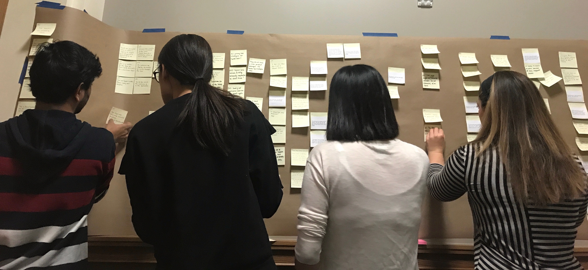
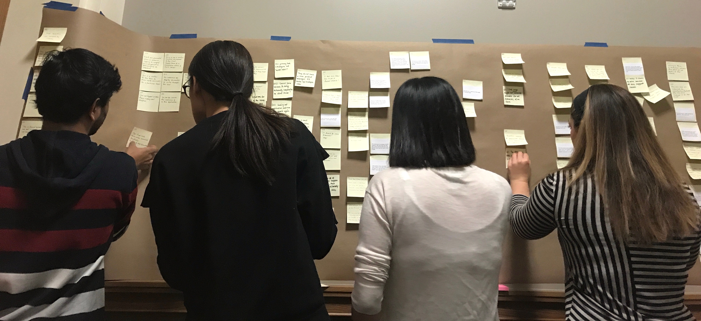

Connecting Connect Space


Client Summary
Our client was an event planning software company which provided a platform for event planners for resource planning and intra-team communication and the communication between the team and attendees, speakers and all other people related to the project. It helped organizers monitor event planning progress, manage registrations, post agendas and analyze data after the event.
The Problem
Customer service was a strong part of our client business. They interacted with their clients addressed their problems daily. The customer service executives would provide live support to the customers through a live chat feature on the portal. As the customers grew, the queries increased eventually increasing the load on the team. The client created a knowledge base containing all the frequently answered questions (FAQs) which would help the customers and reduce the queries for the customer service team. The customers did not use the FAQ page and the load did not reduce. It was essential for the client team to reduce the load on the team and still maintain the customer satisfaction level. Our team's objective was to find a way to promote the use of FAQ pages and reduce the load on the client team answering questions through the chat feature.
Process
Initial meeting
We established an understanding of the client organization and goals. Potential interviewees were identified from the client team and the customers. The clear understanding of the client problem was achieved during this meeting which guided us in the right direction to solve the problem.
Background research/Heuristic Evaluation
Conducted competitive analysis and explored other cases where the same problem occurred. Heuristic evaluation was conducted on the FAQ pages to find the cause of the problem.
User Interviews
We designed 5 different interview protocols for various stakeholders. 6 user interviews were conducted which included the customer service team, designer, developer, and the customers. All the interviews notes were annotated within 48 hours of the interview and key information was synthesized including important quotes and interviewer comments.
Affinity wall
The affinity wall was constructed using the data collected during the user interviews. Key take-aways and important quotes were written on post-its. These were arranged according to the interviewees at the start of the process. The affinity notes were rearranged according to common themes and a summary statement was synthesized based on similar notes.

After several iterations of arrangements, a few patterns started to emerge out of the affinity notes and these patterns were summarized using a more generalized statement and the main causes of the problem were highlighted by these higher level notes.
The affinity notes were rearranged according to common themes and a summary statement was synthesized based on similar notes.

After several iterations of arrangements, a few patterns started to emerge out of the affinity notes and these patterns were summarized using a more generalized statement and the main causes of the problem were highlighted by these higher level notes.

Solution Comparison
A flow model was constructed using the affinity wall which highlighted the problem areas. The visibility of the FAQ and the order of execution for solving a customer query were identified as major causes for the high load on customer service executives.Various solutions were discussed and 3 solutions were presented to the clients based on a cost-value analysis for the implementation.
Recommendations
The following recommendations were made after optimizing the solutions for low cost and high impact.- Modify the process of solving customer queries to guide the user towards the FAQ page
- Improve the visibilty of the FAQ page to the end-user.